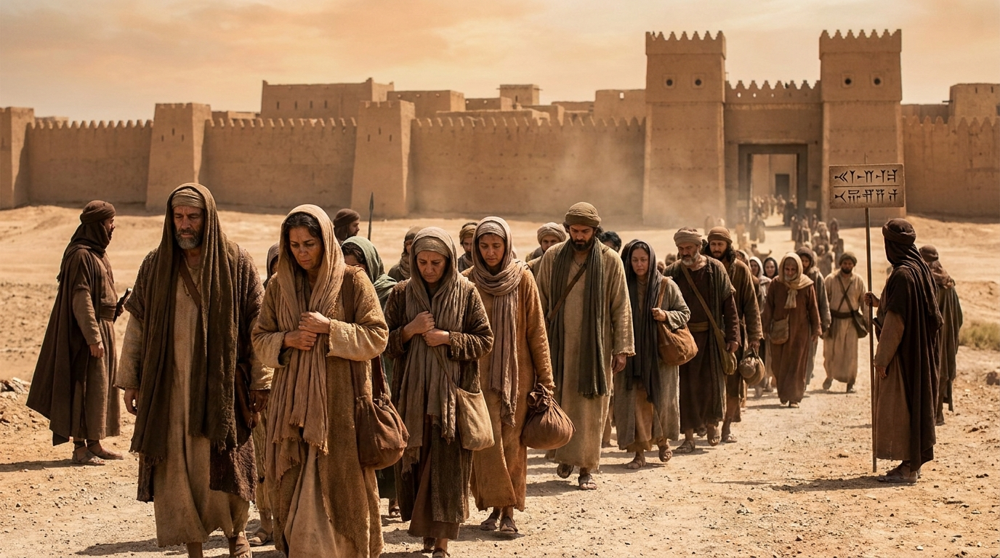

O Fio Condutor da História
A Bíblia não está organizada estritamente em ordem cronológica (por data de acontecimento). Os livros estão agrupados por estilo literário (história, poesia, profecia). Por isso, conhecer a Linha do Tempo é fundamental para não se perder na leitura e entender como a história da salvação avança, de Gênesis ao Apocalipse.
🌍 A Criação e os Patriarcas (Até ~1800 a.C.)
Tudo começa com a criação do mundo, a queda do homem e o dilúvio. Depois, Deus chama um homem, Abraão, e faz com ele uma aliança, prometendo transformar sua família em uma grande nação. A história segue com seus descendentes: Isaque, Jacó (que tem o nome mudado para Israel) e José, cuja história leva as 70 pessoas da família para o Egito, fugindo da fome.
🚶 O Êxodo e a Conquista (~1400 a.C.)
Após 400 anos, a família virou uma nação escrava no Egito. Deus levanta Moisés para libertá-los (Êxodo). Após 40 anos vagando no deserto e recebendo a Lei no Sinai, Moisés morre. Josué assume a liderança e lidera o povo na conquista militar da Terra Prometida (Canaã), dividindo-a entre as 12 tribos.
👑 Juízes e Reis (~1050 a.C. a 930 a.C.)
Israel passa por um longo e caótico período liderado por "Juízes" (como Sansão e Gideão). Pedindo para serem como as outras nações, eles exigem um Rei. O Reino Unido de Israel atinge seu auge militar com Davi e seu auge de riqueza e sabedoria com Salomão, que constrói o primeiro Templo em Jerusalém.
💔 Reino Dividido, Exílio e Retorno (930 a.C. a ~400 a.C.)

Após a morte de Salomão, a nação racha em duas: Israel (Norte) e Judá (Sul). Os reis se desviam de Deus e os profetas (como Elias, Isaías e Jeremias) alertam sobre o juízo. Israel é destruída pela Assíria. Judá é levada cativa para a Babilônia. Após 70 anos de exílio, os persas permitem o retorno dos judeus (sob a liderança de Zorobabel, Esdras e Neemias) para reconstruir Jerusalém e o Templo.
🤫 O Período Interbíblico (~400 a.C. a 4 a.C.)
Os chamados "400 anos de silêncio" separam o Antigo do Novo Testamento. Durante esse tempo, não houve profetas bíblicos. Contudo, muita coisa aconteceu: o Império Grego dominou a região, a cultura se misturou (surgindo grupos como Fariseus e Saduceus) e, por fim, o Império Romano conquistou o mundo, preparando o cenário exato para o nascimento do Messias.
✝️ O Messias e a Igreja (Séc. I d.C.)
Jesus nasce, cumpre as profecias, realiza seu ministério, é crucificado e ressuscita. Após sua ascensão, o Espírito Santo desce no Pentecostes e a Igreja Primitiva nasce. Liderados pelos apóstolos, especialmente Paulo, o Evangelho rompe as fronteiras de Israel e alcança os gentios por todo o Império Romano. A Bíblia se encerra com as cartas às igrejas e a visão profética do Apocalipse.
✅ Resumo
Ler a Bíblia com a cronologia em mente é como montar um quebra-cabeça com a imagem da caixa do lado. Você percebe que todos os eventos estão perfeitamente conectados, caminhando em direção à redenção da humanidade em Cristo.